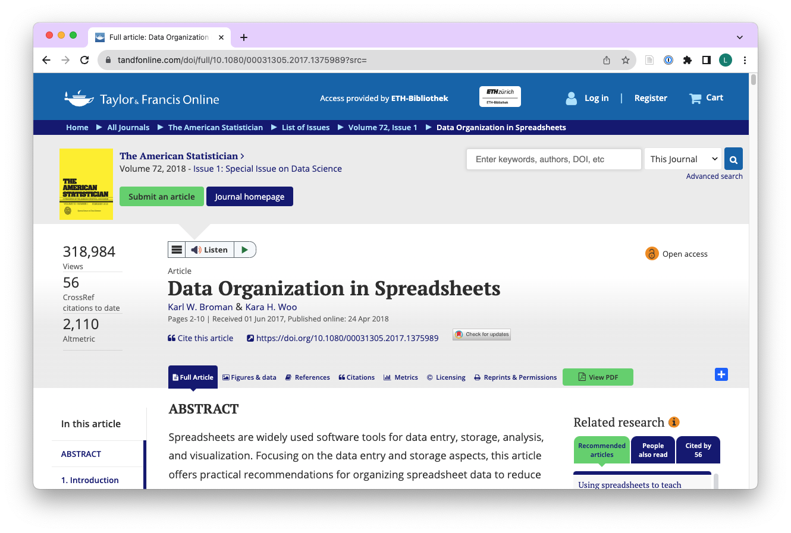

- Learners can apply functions from dplyr to change specific values of a variable in a dataframe.
- Learners can apply functions from the lubridate package to convert dates not in ISO 8601 to the date class in R.
- Learners can apply functions from knitr and gt package to display and cross-reference tables in HTML output reports.
Conditions & Dates & Tables
ds4owd - data science for openwashdata
Lars Schöbitz
ETH Zurich
Oct 23, 2025
Learning Objectives (for this week)
Looking back: Module 4
Data Organization in Spreadsheets

Rules for variable names
- avoid spaces
- avoid special characters
- use consistent naming conventions (e.g. snake_case)
use
- ts
- users
- system
avoid
- Total Solids (g/L)
- Number of users
- System (pit latrine / septic tank)
Data dictionary / codebook
- variable descriptions belong into a data dictionary / codebook (not into variable names)
- data dictionaries / codebooks are separate files
| variable_name | description |
|---|---|
| ts | Total solids in g/L. |
| users | Number of users per system. |
| system | Sanitation system in use at sample location (septic tank / pit latrine). |
Conditional statements
dplyr functions mutate() & case_when()
mutate()adds new variables to a data framecase_when()is another form of an if-else statement- combination of functions are used to create variables with new values or fix existing ones
My turn: Conditional statements
Sit back and enjoy!
20:00
Take a break
Please get up and move!
10:00
Image generated with DALL-E 3 by OpenAI
Your turn: md-05-exercises
- Open posit.cloud/spaces/663318/content in your browser.
- Verify that the ds4owd workspace is open.
- Click Start next to md-05-exercises.
- In the File Manager in the bottom right window, locate the
md-05a-conditions-your-turn.qmdfile and click on it to open it in the top left window.
20:00
Task 1
- A mistake happened during data entry for sample id 16. Use
mutate()andcase_when()to change the ts value of 0.72 to 8.72.
| id | date | system | location | users | ts |
|---|---|---|---|---|---|
| 1 | 2023-11-01 | pit latrine | household | 5 | 136.24 |
| 2 | 2023-11-01 | pit latrine | household | 7 | 102.45 |
| 3 | 2023-11-01 | pit latrine | household | NA | 57.02 |
| 4 | 2023-11-01 | pit latrine | household | 6 | 27.03 |
| 5 | 2023-11-01 | pit latrine | household | 12 | 97.27 |
| 6 | 2023-11-02 | pit latrine | household | 7 | 78.21 |
| 7 | 2023-11-02 | septic tank | household | 14 | 15.24 |
| 8 | 2023-11-02 | septic tank | household | 4 | 29.39 |
| 9 | 2023-11-02 | septic tank | household | 10 | 64.22 |
| 10 | 2023-11-02 | septic tank | household | 12 | 8.01 |
| 11 | 2023-11-03 | pit latrine | public toilet | 50 | 11.24 |
| 12 | 2023-11-03 | pit latrine | public toilet | 32 | 84.05 |
| 13 | 2023-11-03 | pit latrine | public toilet | 41 | 55.92 |
| 14 | 2023-11-03 | pit latrine | public toilet | 160 | 15.32 |
| 15 | 2023-11-03 | pit latrine | public toilet | 20 | 22.65 |
| 16 | 2023-11-04 | septic tank | public toilet | 26 | 8.72 |
| 17 | 2023-11-04 | septic tank | public toilet | 91 | 43.92 |
| 18 | 2023-11-04 | septic tank | public toilet | 68 | 10.37 |
| 19 | 2023-11-04 | septic tank | public toilet | 112 | 23.21 |
| 20 | 2023-11-04 | septic tank | public toilet | 59 | 15.64 |
Task 2
- Another mistake happened during data entry for sample id 6. Use
mutate()andcase_when()to change the system value of id 6 from “pit latrine” to “septic tank”.
| id | date | system | location | users | ts |
|---|---|---|---|---|---|
| 1 | 2023-11-01 | pit latrine | household | 5 | 136.24 |
| 2 | 2023-11-01 | pit latrine | household | 7 | 102.45 |
| 3 | 2023-11-01 | pit latrine | household | NA | 57.02 |
| 4 | 2023-11-01 | pit latrine | household | 6 | 27.03 |
| 5 | 2023-11-01 | pit latrine | household | 12 | 97.27 |
| 6 | 2023-11-02 | septic tank | household | 7 | 78.21 |
| 7 | 2023-11-02 | septic tank | household | 14 | 15.24 |
| 8 | 2023-11-02 | septic tank | household | 4 | 29.39 |
| 9 | 2023-11-02 | septic tank | household | 10 | 64.22 |
| 10 | 2023-11-02 | septic tank | household | 12 | 8.01 |
| 11 | 2023-11-03 | pit latrine | public toilet | 50 | 11.24 |
| 12 | 2023-11-03 | pit latrine | public toilet | 32 | 84.05 |
| 13 | 2023-11-03 | pit latrine | public toilet | 41 | 55.92 |
| 14 | 2023-11-03 | pit latrine | public toilet | 160 | 15.32 |
| 15 | 2023-11-03 | pit latrine | public toilet | 20 | 22.65 |
| 16 | 2023-11-04 | septic tank | public toilet | 26 | 0.72 |
| 17 | 2023-11-04 | septic tank | public toilet | 91 | 43.92 |
| 18 | 2023-11-04 | septic tank | public toilet | 68 | 10.37 |
| 19 | 2023-11-04 | septic tank | public toilet | 112 | 23.21 |
| 20 | 2023-11-04 | septic tank | public toilet | 59 | 15.64 |
Task 3 (stretch goal)
- Add a new variable with the name
ts_catto the dataframe. that categorises sludge samples into low, medium and high solids content.Usemutate()andcase_when()to create the new variable.
- samples with less than 15 g/L are categorised as low
- samples with 15 g/L to 50 g/L are categorised as medium
- samples with more than 50 g/L are categorised as high
Task 3 (stretch goal)
| id | date | system | location | users | ts | ts_cat |
|---|---|---|---|---|---|---|
| 1 | 2023-11-01 | pit latrine | household | 5 | 136.24 | high |
| 2 | 2023-11-01 | pit latrine | household | 7 | 102.45 | high |
| 3 | 2023-11-01 | pit latrine | household | NA | 57.02 | high |
| 4 | 2023-11-01 | pit latrine | household | 6 | 27.03 | medium |
| 5 | 2023-11-01 | pit latrine | household | 12 | 97.27 | high |
| 6 | 2023-11-02 | pit latrine | household | 7 | 78.21 | high |
| 7 | 2023-11-02 | septic tank | household | 14 | 15.24 | medium |
| 8 | 2023-11-02 | septic tank | household | 4 | 29.39 | medium |
| 9 | 2023-11-02 | septic tank | household | 10 | 64.22 | high |
| 10 | 2023-11-02 | septic tank | household | 12 | 8.01 | low |
| 11 | 2023-11-03 | pit latrine | public toilet | 50 | 11.24 | low |
| 12 | 2023-11-03 | pit latrine | public toilet | 32 | 84.05 | high |
| 13 | 2023-11-03 | pit latrine | public toilet | 41 | 55.92 | high |
| 14 | 2023-11-03 | pit latrine | public toilet | 160 | 15.32 | medium |
| 15 | 2023-11-03 | pit latrine | public toilet | 20 | 22.65 | medium |
| 16 | 2023-11-04 | septic tank | public toilet | 26 | 0.72 | low |
| 17 | 2023-11-04 | septic tank | public toilet | 91 | 43.92 | medium |
| 18 | 2023-11-04 | septic tank | public toilet | 68 | 10.37 | low |
| 19 | 2023-11-04 | septic tank | public toilet | 112 | 23.21 | medium |
| 20 | 2023-11-04 | septic tank | public toilet | 59 | 15.64 | medium |
Task 3 (stretch goal)
| ts_cat | n |
|---|---|
| high | 8 |
| low | 4 |
| medium | 8 |
Dates and times
Dates and times in R
- Dates and times are stored as numbers in R
- Dates are stored as the number of days since 1970-01-01
- Times are stored as the number of seconds since 1970-01-01 00:00:00
- Dates and times are stored as numeric values, but can be formatted to look like dates and times
My turn: Dates
Sit back and enjoy!
15:00
Take a break
Please get up and move! Let your emails rest in peace.
10:00
Image generated with DALL-E 3 by OpenAI
Tables display
R packages for displaying tables
- Many packages for displaying tables in R
gtpackage is one of the most popular and flexiblekable()function ofknitrpackage useful for simple tables
Our turn: md-05-exercises
- Open posit.cloud/spaces/663318/content in your browser.
- Verify that the ds4owd workspace is open.
- Click Start next to md-05-exercises.
- In the File Manager in the bottom right window, locate the
md-05c-tables.qmdfile and click on it to open it in the top left window.
30:00
Cross references
Cross references
Help readers to navigate your document with numbered references and hyperlinks to entities like figures and tables.
Cross referencing steps:
- Add a caption to your figure or table.
- Give an ID to your figure or table, starting with
fig-ortbl-. - Refer to it with
@fig-...or@tbl-....
Table cross references
The presence of the caption (A few penguins) and label (#tbl-penguins) make this table referenceable:
See @tbl-penguins for data on a few penguins.
becomes:
See Table 1 for data on a few penguins.
| species | island | bill_length_mm | bill_depth_mm | flipper_length_mm | body_mass_g | sex | year |
|---|---|---|---|---|---|---|---|
| Adelie | Torgersen | 39.1 | 18.7 | 181 | 3750 | male | 2007 |
| Adelie | Torgersen | 39.5 | 17.4 | 186 | 3800 | female | 2007 |
| Adelie | Torgersen | 40.3 | 18.0 | 195 | 3250 | female | 2007 |
| Adelie | Torgersen | NA | NA | NA | NA | NA | 2007 |
| Adelie | Torgersen | 36.7 | 19.3 | 193 | 3450 | female | 2007 |
| Adelie | Torgersen | 39.3 | 20.6 | 190 | 3650 | male | 2007 |
Homework assignments module 5
Module 5 documentation
Dataset for capstone project
- In Module 4, you completed an assignment to identify and assess a dataset for your capstone project
- You documented your data assessment in
data-assessment.qmd - You opened an issue on GitHub to share your dataset selection with us
Dataset selection is a pre-condition
Important: Dataset must be selected before Module 5 homework
If you haven’t yet selected a dataset, please complete the Module 4 Assignment 1 now:
ds4owd-002.github.io/website/content/assignments/md-04/am-04-1-data.html
This is required before you can complete the Module 5 homework, where you will upload your data to your GitHub repository.
Questions about your data?
- Use the GitHub issue tracker in your
md-04-assignments-USERNAMErepository - Tag the instructors:
@seawaR@massarin@larnsce - We can help you with:
- Privacy and data sharing concerns
- Identifying alternative datasets
- Determining what modifications are needed
- Aggregation strategies for sensitive data
Homework due date
- Homework assignment due: October 29, 2025
Wrap-up
Thanks!
Slides created via revealjs and Quarto: https://quarto.org/docs/presentations/revealjs/
Access slides as PDF on GitHub